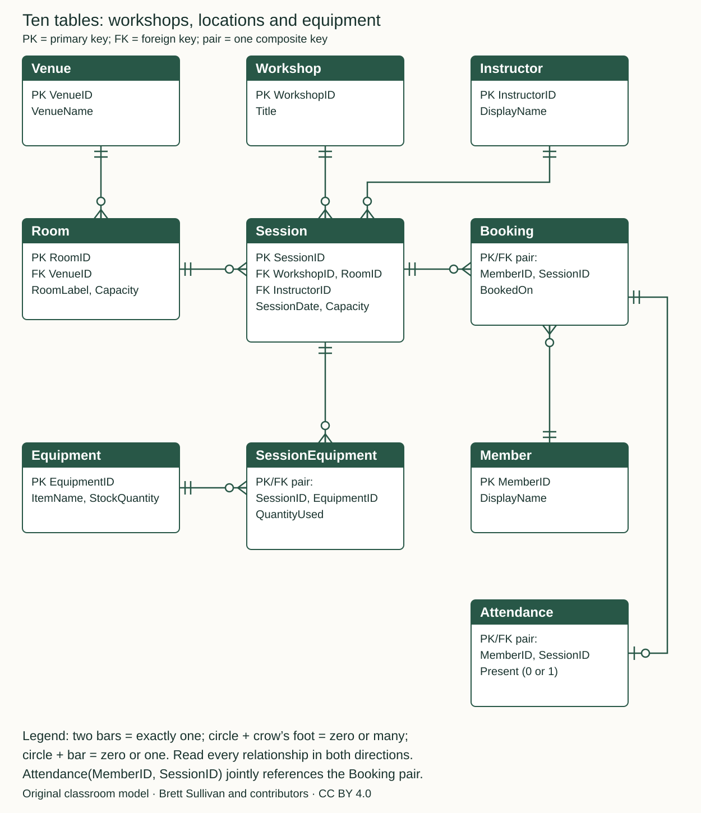

UNIT 4 / WORKSHEET
Interpreting a ten-table ER model.
Follow relationships, explain keys and check assumptions. Optional practice with explained answers.
The diagram has its own print page. You can also download the SVG for a larger print.
Return to the chapter →Use this ten-table model to practice reading relationships. Follow one connection at a time, explain what it allows, then try the questions before opening the answers. This is optional practice with no marks, submissions or progress records.

Read the model in words
- Venue has zero or many Room rows; every Room row belongs to exactly one Venue.
- Room has zero or many Session rows; every Session row belongs to exactly one Room.
- Workshop has zero or many Session rows; every Session row belongs to exactly one Workshop.
- Instructor has zero or many Session rows; every Session row belongs to exactly one Instructor.
- Session has zero or many Booking rows; every Booking row belongs to exactly one Session.
- Member has zero or many Booking rows; every Booking row belongs to exactly one Member.
- Session has zero or many SessionEquipment rows; every SessionEquipment row belongs to exactly one Session.
- Equipment has zero or many SessionEquipment rows; every SessionEquipment row belongs to exactly one Equipment.
- A booking has zero or one Attendance row; every Attendance row belongs to exactly one Booking.
Each parent table uses unique IDs. A name, room label or date is not assumed to be unique. Every foreign key shown must contain a value.
Check the other field rules too: Capacity and QuantityUsed are positive integers; StockQuantity is zero or a positive integer; Present is 0 or 1.
In each bridge table, the two PK/FK fields work together as one composite primary key. Attendance must refer to an existing Booking pair. Its joint foreign key checks the Member and Session together, not separately.
Worked example: from a booking to a venue
To locate the venue of a booked session, follow Member → Booking → Session → Room → Venue. For example, Booking(M07, S12) refers to Session S12. If S12 has RoomID R02 and R02 has VenueID V01, the booked session is at V01. Each booking identifies one session and that session identifies one room and venue. This does not mean a member can attend only one venue: different bookings can follow different paths.
Relational notation
Venue(VenueID PK, VenueName)
Room(RoomID PK, VenueID FK, RoomLabel, Capacity)
Workshop(WorkshopID PK, Title)
Instructor(InstructorID PK, DisplayName)
Session(SessionID PK, WorkshopID FK, InstructorID FK, RoomID FK, SessionDate, Capacity)
Member(MemberID PK, DisplayName)
Booking(MemberID PK/FK, SessionID PK/FK, BookedOn)
Attendance(MemberID PK/FK, SessionID PK/FK, Present)
Equipment(EquipmentID PK, ItemName, StockQuantity)
SessionEquipment(SessionID PK/FK, EquipmentID PK/FK, QuantityUsed)
Attendance(MemberID, SessionID) jointly references Booking(MemberID, SessionID).Stored-key snapshot for question 9
Member IDs: M07, M08 Session IDs: S12, S13 Equipment IDs: E01, E02 Booking pairs: (M07,S12), (M07,S13), (M08,S12) Attendance pairs: (M07,S12), with Present = 1 SessionEquipment pairs: (S12,E01), (S13,E01), each with QuantityUsed = 2
1. Read the whole model
Name the ten tables. Which two are bridge tables, and which table stores an optional follow-up event?
Show explained answer
The tables are Venue, Room, Workshop, Instructor, Session, Member, Booking, Attendance, Equipment and SessionEquipment. Booking bridges Member–Session; SessionEquipment bridges Session–Equipment. Attendance stores an optional follow-up event for a booking.
2. Read a relationship both ways
Read Venue–Room in both directions. Can a venue exist before any rooms are recorded? Can a room exist without a venue?
Show explained answer
A venue has zero or many rooms; each room has exactly one venue. An empty venue is allowed. A room needs a non-null VenueID referring to an existing Venue. The diagram does not require every venue to have a room.
3. Separate a workshop from a session
Why are Workshop and Session separate? Could one workshop run twice, in different rooms, with different instructors?
Show explained answer
Workshop describes the activity; Session describes one scheduled delivery. Two Session rows can reference the same WorkshopID while using different SessionIDs, RoomIDs, InstructorIDs and dates. The model does not impose unique titles or unique workshop/date combinations.
4. Follow several links
Session S12 refers to Room R02; R02 refers to Venue V01. Member M07 is booked in S12 and S13. Does this prove both sessions use V01?
Show explained answer
No. It establishes V01 only for S12. Follow S13’s own RoomID and then that room’s VenueID. The member’s identity does not determine the room or venue of every booking.
5. Resolve two many-to-many relationships
Explain Member–Session and Session–Equipment. Where is each relationship resolved?
Show explained answer
A member can book many sessions and a session can have many members: Booking stores each member/session pair. A session can use several equipment types and an equipment type can be used in several sessions: SessionEquipment stores each session/equipment pair. Both bridges have composite keys that prevent duplicate pairs.
6. Interpret the composite key
Why does SessionEquipment use the pair (SessionID, EquipmentID)? Where should QuantityUsed be stored?
Show explained answer
The pair identifies one equipment type allocated to one session. SessionID alone would permit only one equipment type per session; EquipmentID alone would permit use in only one session. QuantityUsed describes this particular allocation, so it belongs in SessionEquipment, not as a session-independent attribute of Equipment.
7. Interpret optional attendance
Can a booking exist without attendance? Can attendance exist without a booking? Does no attendance row mean Present = 0?
Show explained answer
A booking can have zero or one Attendance row. Each Attendance row must refer to an existing Booking pair. Missing attendance means unrecorded; it is not the same as a recorded Present value of 0. The diagram does not force attendance to be entered later.
8. Use the exact foreign-key target
Why is Attendance’s joint reference to Booking stronger than separate references to Member and Session?
Show explained answer
Separate references establish only that the person and session exist. The composite reference also establishes that this particular person booked this particular session. For example, M08 and S13 may exist while Booking(M08, S13) does not.
9. Check candidate rows
Use the stored-key snapshot below. For each candidate, say whether it is allowed by the stated key/domain rules: Attendance(M07,S13,1); Attendance(M08,S13,1); another Attendance(M07,S12,0); SessionEquipment(S12,E02,1); SessionEquipment(S12,E99,1); SessionEquipment(S13,E02,0).
Show explained answer
Allowed: Attendance(M07,S13,1), because that booking exists and has no attendance; SessionEquipment(S12,E02,1), because both parents exist, the pair is new and quantity is positive. Rejected: Attendance(M08,S13,1), because its booking pair is absent; another Attendance(M07,S12,0), because its primary key already exists; SessionEquipment(S12,E99,1), because E99 is absent; SessionEquipment(S13,E02,0), because zero violates the stated positive-quantity rule. These outcomes assume the stated constraints are enforced.
10. Identify what keys do not enforce
Name three scheduling, capacity or stock rules that these relationships alone do not enforce.
Show explained answer
Possible rules include: a session’s Capacity must not exceed its room’s Capacity; booking count must not exceed session capacity; a room or instructor must not have overlapping sessions; equipment allocations across overlapping sessions must not exceed stock. PK/FK rules do not perform these cross-row checks. Dates alone cannot determine overlap because start time and duration are missing.
11. Trace a report
A report lists member name, workshop title, room label and venue name for each booking. Which six tables must it follow?
Show explained answer
Member → Booking → Session → Workshop gives the member and activity; Session → Room → Venue supplies the location. The six tables are Member, Booking, Session, Workshop, Room and Venue. Attendance and equipment are unnecessary for this report. This is a path-reading exercise, not a requirement to write a six-table SQL join.
12. Check a claim about deletion
A reader says deleting a session must delete all its bookings. Is that specified by the ER diagram?
Show explained answer
No. The relationships say what references must remain valid; they do not choose a deletion policy. A database might restrict deletion, cascade under an explicit rule, or use an agreed archive policy. Do not infer ON DELETE CASCADE from a crow’s foot.
13. Read a one-to-one extension
Explain why Attendance’s primary key limits a booking to one Attendance row. What would need to change to record multiple check-in events?
Show explained answer
Attendance uses the same member/session pair as its primary key, so a second row for that booking duplicates the key. For multiple events, introduce an event identifier or a justified key including an event sequence/time, and change the relationship to Booking 1 → 0..many events. This is a discussion of an extension, not a diagram-creation requirement.
14. Explain a repeated room label
Two rows use RoomLabel “Studio”, one at each of two venues. Is that forbidden by the model?
Show explained answer
No. RoomID identifies the room; RoomLabel is not stated to be unique. If the business requires room labels to be unique within each venue, document a unique constraint on (VenueID, RoomLabel). Do not infer it from sample names.
Open printable worksheet · Download questions · Download explained answers · Download complete pack · Download diagram

This original model is for interpretation practice. The existing six-entity creation exercise remains unchanged. Curriculum reference: 2026 Year 12 syllabus, printed page 20. Symbol conventions: SCSA support booklet, printed page 15. Independent teacher review remains pending.